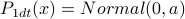
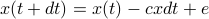

Session 4: Diffusion part 1, random walks

be able to explain characteristics of Gaussian random walk processes without drift, with constant drift, and with origin-directed drift.
Preview: again the single molecule force spectroscopy measurement again; this time rather than binning into open/closed, consider the whole continuous reaction coordinate x.
Simplest case of diffusion with no “potential” – e.g. observation of pollen grains under a microscope, or of microbeads…
Problem setup: consider the position of a particle,
 , over multiple discrete timesteps.
, over multiple discrete timesteps.present simple case of random walk; long times is Gaussian
then generalize to , time interval
 ,
,  steps with . Notation is where or .
steps with . Notation is where or .generalize to other step size distributions, note the universality.
Draw some example trajectories and histograms. Note that can think of two ways, as stochastic trajectory
, or as a probability distribution evolving over time, .Derive ; .
generalize to higher dimensions.
Now add a constant drift term: , so that each time step you move as . Then . Plot this, draw some example trajectories.
How to keep the variance from exploding? Add a drift term that brings you back to the origin. Call it . This is like a spring, or optical trap, or what not. Then . (note this is the overdamped case where velocity = mobility force). Next time we will derive the stationary distribution of this process
Final note: an
-dimensional random walk model of a polymer! Doesn't account for self-avoiding effects…